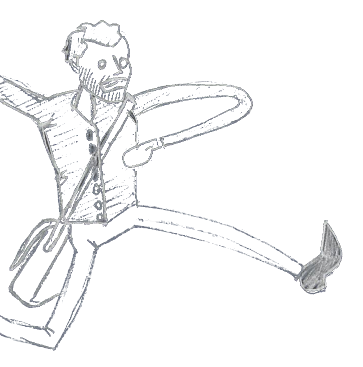

I create, support, and provide guidance on human centered technical process' and projects. I specialize in work with at-risk or vulnerable populations and how risk mitigation practices and technologies can be integrated into their communities and workflows.
I received my Bachelors in Communications from San Francisco State University, and my Masters in Conflict Analysis and Resolution from George Mason University.